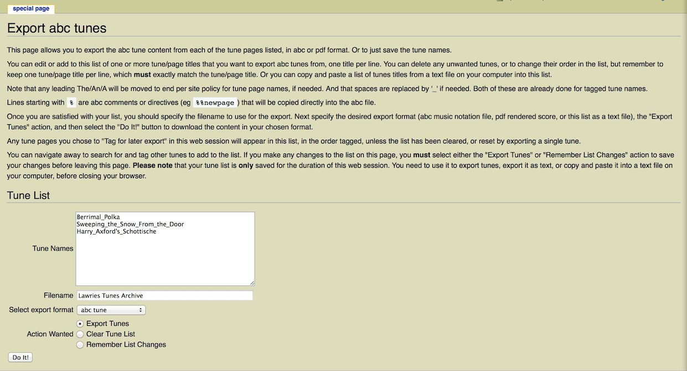
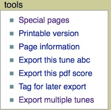

|
abcExport Release status: beta |
|
|---|---|
| Implementation | Page action, Special page |
| Description | provides a special page for exporting content from pages containing abc music notation in abc or pdf formats |
| Author(s) | Lawrie Brown |
| Latest Version | 1.0 |
| License | CC By NC SA |
| MediaWiki | tested on 1.29+ |
| Download | http://bushtraditions.wiki/tunes/extensions/abcExport.zip |
The abcExport extension provides a special page for exporting content from pages containing abc music notation in abc or pdf formats.
This extension is most likely used along with the ABCjs extension that supports input, tagging & display of abc music notation.
Installation of abcExport requires both installing the extension into your wiki, and also installing the required helper programs if you want to support pdf score export.
abcExport in your
extensions/ folder.
LocalSettings.php:
wfLoadExtension('abcExport');
For conversion of abc music notation to pdf, you need:
LocalSettings.php:
abcm2ps command (or null if missing).
If set to null, pdf score export is not available.
Default "/usr/bin/abcm2ps" abcm2ps,
such as reference to a "format file" with additional abc rendering
options, e.g.
$wgabcExport_abcm2ps = "/usr/bin/abcm2ps -F /somepath/to/share/abcm2ps/morefields.fmt" ;
"/usr/bin/gs"
<pre id=abc>
</pre>
true
true
See abcExport/extension.json in your extensions/
folder for the default values of these variables.
The special page for this extensions is listed under
Special:SpecialPages as Export abc tunes in the
Page tools section. You can also access it directly using the
Export multiple tunes toolbox link
(see below). The page looks like this:

To use the export feature, you first need to list the pages with tune content. You can edit or add to this list of one or more tune/page titles that you want to export abc tunes from, one title per line. You can delete any unwanted tunes, or to change their order in the list, but remember to keep one tune/page title per line, which must exactly match the tune/page title. Or you can copy and paste a list of tunes titles from a text file on your computer into this list. Or you can tag a series of tunes for later export, which will be added to this list in order (provided you have Mediawiki 1.27+ with Session Manager support).
Note that any leading The/An/A will be moved to end per site policy for tune page names, if needed. And that spaces are replaced by '_' if needed. Both of these are already done for tagged tune names.
Lines starting with % are abc comments or directives (eg %%newpage) that will be copied directly into the abc file.
Once you are satisfied with your list, you should specify the desired export filename, select the desired export format (abc music notation file, pdf rendered score, or this list as a text file), the "Export Tunes" action, and then select the "Do It!" button to download the content in your chosen format.
You can navigate away to search for and tag other tunes to add to the list ((provided you have Mediawiki 1.27+). Tagged tunes will appear in this list, in the order tagged, unless the list has been cleared, or reset by exporting a single tune. If you make any changes to the list on this page, you must select either the 'Export Tunes' or 'Remember List Changes' action to save your changes before leaving this page. Please note that your tune list is only saved for the duration of this web session. You need to use it to export tunes, export it as text, or copy and paste it into a text file on your computer, before closing your browser.
This extension also adds a number of extra links into the Tools
Navigation Toolbox (usually on the LHS), as shown:

These links provide the following functionality:
Page_title.abc and stay on this page.
Page_title.pdf and
stay on this page.
This extension adds a special page Special:AbcExport that allows for multiple page titles to be entered, or accessed if previously tagged. This page displays the list of tunes tagged for export in the current browser session, which can edited or extended. It provides options to select the export format (abc, pdf, or txt list of tunes), actions available, and the "Do It!" (Submit) button to perform them. It uses the Session Manager included in Mediawiki 1.27+ to remember tagged tune names, and the list of tagged tunes, for the current browser session. It also adds several new Navigation toolbox links to export tunes from the current page (as abc or pdf), tag page, or access this special page, by adding hooks to SkinTemplateBuildNavUrlsNav_urlsAfterPermalink and to BaseTemplateToolbox.
Copyright © 2018 Lawrie Brown
This extension was originally written starting with the code in the ePubExport extension, and subsequently rewritten using the cookiecutter extension builder, and some ideas from the CiteThisPage extension. Those contributions are gratefully acknowledged.